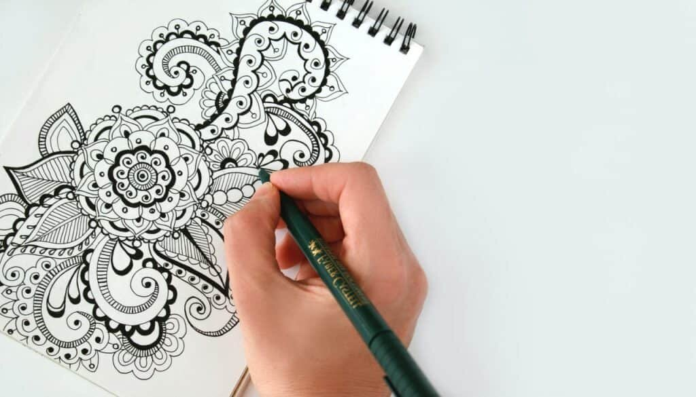

El arte es un valioso recurso para que los niños/as puedan expresar su mundo interior y todos los procesos que viven, que muchas veces no son capaces de verbalizar. Mediante la acción artística se llega a lugares, que de otras maneras es muy difícil. En el arte todo se acepta, este busca contener todas las emociones y proporcionar un lugar seguro de expresión.
Es importante comprender que no buscamos que las creaciones de nuestros niños/as sean “bonitas”, sino que lo importante sea la expresión, sin adiciones de juicio.
Otro objetivo importante es promover la creatividad, desarrollar la imaginación y divertirse a través de la exploración de los diferentes materiales, respondiendo a la necesidad de su canal sensorial.
Además el arte les permite favorecer la motricidad fina para el proceso de la escritura, regular la frustración, promover la paciencia, conocer sus mundos interiores y disfrutar de todas las posibilidades que nos entrega.
El arte tiene características y cualidades específicas, idóneas para trabajar como método de enseñanza para explorar el proceso de aprendizaje, considerando que este camino nos brinda la posibilidad del juego constante, pudiendo integrar todas las dimensiones del ser humano.
!Tienes muchas posibilidades!
1. Mandalas
Diseñados: Les facilitas mandalas impresos ya diseñados para que puedan pintarlos con distintos tipos de lápices.
En blanco: Les proporcionas un círculo para que sean ellos mismos quienes confeccionen el diseño de su mandala. Puedes sugerir una temática o hacerlo de manera libre. Pueden hacerlo con lápices de colores/cera, trozos de papeles, elementos reciclados, tiza, etc.
Goma eva y lana: Decoran un mandala con lana, utilizando agujas de plástico. Para esto, les entregas un círculo de goma eva con agujeros hechos previamente. Ellos/as eligen los colores de las lanas a utilizar para luego con su aguja crear múltiples formas.
2. Trabajo anatómico: Para la comprensión de articulaciones, músculos y oŕganos.
En una cartulina muy grande les pides que se recuesten sobre ella para dibujar el contorno de sus cuerpos para luego con diversos materiales identificar el sistema a trabajar: musculatorio, articulatorio, respiratorio, digestivo, etc.
3. Trabajo de Alimentación saludable
Por medio del uso de plasticina o masa hecha en casa pueden crear alimentos saludables, donde predominen las frutas y verduras. Cada niño y niña hace sus creaciones para luego compartirlas con el grupo.
4. Confección de Atrapasueños
Para valorar la importancia del descanso, puedes crear atrapasueños con material reciclado o elementos de la naturaleza.
Ejemplos: En un círculo de cartón reciclado haces agujeros en todo su contornos para que ellos y ellas pasen lanas de colores para ir creando una red, como una tela de araña. Además puedes poner retazos de tela en la parte inferior para que cuelguen y al final de ellos pegar plumas. Lo mismo pueden hacer con elementos de naturaleza, tales como ramas, hojas, semillas.
5. Origami
La creación de origami es excelente complemento para el trabajo de posturas, ya que mediante el papel pueden confeccionar mariposas, ranas, dinosaurios, perros, gatos, etc.
6. Títeres de animales
Esta creación puede ser mediante elementos reciclados, tales como: calcetines viejos, palos de helado, conos de papel higiénico, cucharas plásticas, etc.
Peggysue. S.S